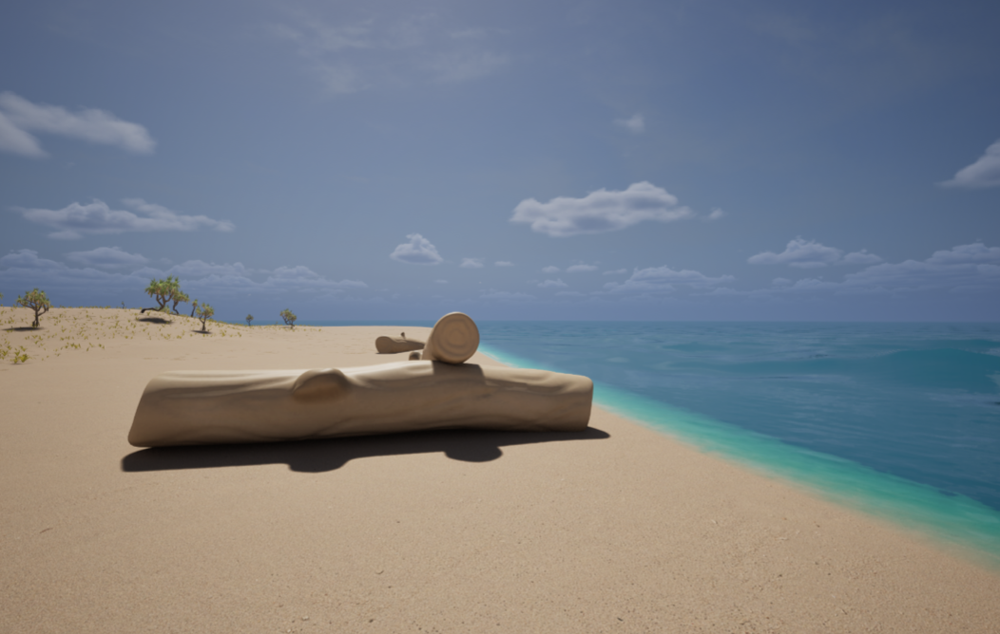
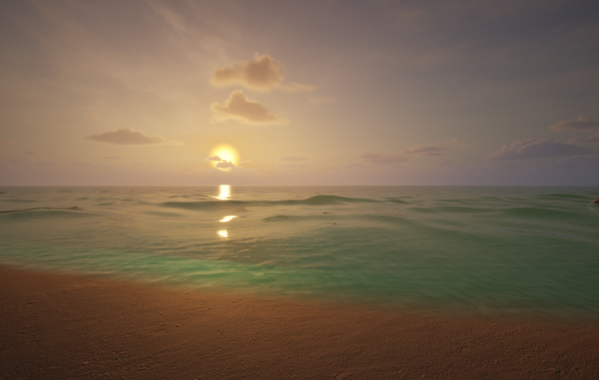
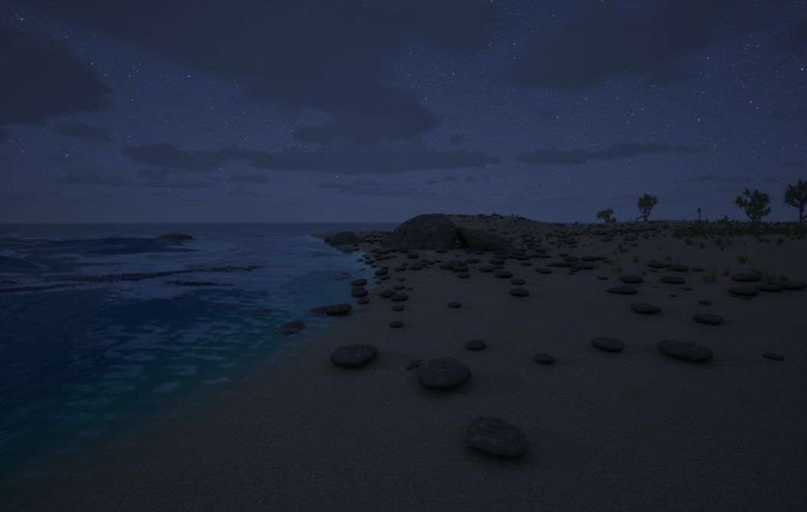

wav.ie
wav.ie
24th of May, 5 PM, Black Box 12.02.103
1 / 3

2 / 3

3 / 3

❮
❯
wav.ie is an intersensory exhibit set in a virtual ocean. Visitors are invited to interact with the sights, sounds, smells and objects of the ocean and leave their own translations of how they experience the exhibit.